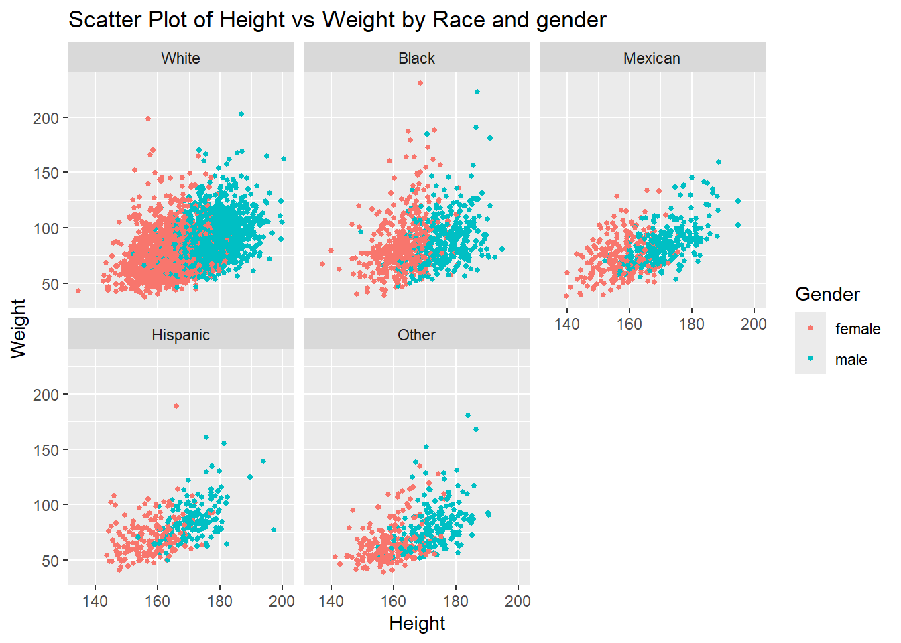
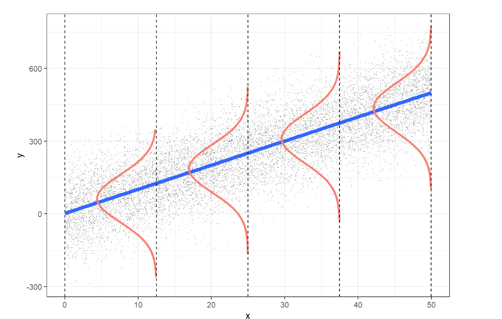

# Load Packages
#install.packages(pacman)
pacman::p_load(tidyverse, here)
# Load Data
df <- read_rds(here("data", "nhanes_modified_df.rds"))
df <- df |>
janitor::clean_names()6 Statistical Methods
Welcome to the session on Statistical Methods! The goal of this session is to help you understand the fundamental concepts of biostatistics and the different types of variables used in data analysis. By the end of this session, you will be familiar with these concepts and ready to explore the two key branches of statistics: descriptive and inferential.
By the end of this chapter, students will:
Understand key concepts in biostatistics
Be able to differentiate between types of variables
Be able to differentiate between the two major parts of statistics: descriptive and inferential analysis
6.1 Introduction to Biostatistics and Types of Variables
6.1.1 Biostatistics
Biostatistics is the application of statistical methods to biological and medical data. It helps clinicians make informed decisions based on data collected from clinical trials, observational studies, and patient records.
6.1.2 Variables
If, as we observe a characteristic, we find that it takes on different values in different persons, places, or things, we label the characteristic a variable.
For example, if we are observing the characteristic’height’ in a group of people, we will notice that height varies from person to person. Therefore, height is a variable.
6.1.3 Types of Variables
Variables are essential in data analysis and are categorized into four types:

Nominal Variables: Categorical variables with no inherent order (e.g., blood type: A, B, AB, O).
Ordinal Variables: Categorical variables with a meaningful order but unequal intervals (e.g., pain scale: mild, moderate, severe).
Discrete Variables: Numerical variables with distinct, countable values (e.g., number of patients in a clinic).
Continuous Variables: Numerical variables that can take any value within a range (e.g., patient weight, height).
6.1.4 Two Major Parts of Statistics
Statistics is divided into two main areas:
Descriptive Statistics: Summarizing and describing data.
Inferential Statistics: Making predictions or inferences about a population based on a sample.
Explore the following session to deepen your understanding of descriptive and inferential statistical methods, as well as how to implement these techniques using R.
6.2 Descriptive Statistics: Graphical Methods
Graphical methods are crucial for understanding data at a glance. Depending on the number and type of variables, we use different graphical techniques. The graphical methods provided here are just some of the available methods for data visualization. There are many others that can be explored in more detail later. This is intended to be a basic introduction to help you get started.
6.2.1 Graphical Methods for a Single Variable
| Variable Type | Graphical Method | Description |
|---|---|---|
| Categorical (Nominal / Ordinal) | Bar Chart | Shows frequency or proportion of categories |
| Discrete (Integer) | Histogram | Displays the count of values across defined intervals |
| Dot Plot | Shows individual data points for small datasets | |
| Continuous (Double) | Histogram | Shows the frequency distribution of continuous values |
| Box Plot | Displays distribution, including outliers | |
| Density Plot | Visualizes the density function |
6.2.2 Graphical Methods for Two Variable Visualization
| Categorical (Nominal / Ordinal) | Numeric (Discrete / Continuous) | |
|---|---|---|
| Categorical (Nominal / Ordinal) | Stacked Bar Chart | Box plot |
| Numeric (Discrete / Continuous) | Box plot | Scatter Plot |
6.2.3 Data Visualization Using R: Introduction to Grammar of Graphics
Data visualization in R can be effectively done using the ggplot2 package, which is included in the popular tidyverse collection of R packages. ggplot2 is based on the Grammar of Graphics, a structured approach that allows you to build plots layer by layer. This grammar provides a framework for describing and creating visualizations by combining different graphical elements. The idea is that any plot can be constructed by breaking it down into components.
The visualisation using ggplot2 package, which follows the philosophy of grammar of graphics, breaks down a plot into several components:
Data: The dataset you’re working with.
Aesthetics: The visual properties (e.g., axes, colors, sizes).
Geometries: The type of plot (e.g., points, bars, lines).
Facets: Dividing the data into subplots.
Scales: Mapping of data values to visual properties.
Coordinates: How data is projected onto the plane (e.g., Cartesian coordinates).
What Happens When You Run ggplot()?
When you run ggplot() in R without specifying any further components, it provides you with a blank “canvas” (or plane) on which you can build your plot. This is like opening a blank sheet of paper to start drawing. Here’s an example:
# Running ggplot without specifying layers
ggplot()
This will simply give you a blank plot. You then need to add layers to specify what the plot will contain.
Aesthetics (aes)
Aesthetic mappings define how data is mapped to visual properties. They include properties such as:
x and y axes: Mapped to variables in your data.
color: Used to differentiate categories.
size: Used to represent magnitude or importance.
For example, when you add aesthetics to ggplot(), it tells R how to map data to the plot:
ggplot(data = df,
mapping = aes(x = height, y = weight))
In this example, height is mapped to the x-axis and weight to the y-axis
Layers in ggplot2
The power of ggplot2 lies in its layering system. After creating the base plot with ggplot(), you can add multiple layers.
You add these layers using the + operator
For Example:
# Adding layers to create a plot
ggplot(df, aes(x = height, y = weight)) +
geom_point() +
labs(title = "Height vs Weight",
caption = "Source: NHANES Data") Warning: Removed 54 rows containing missing values or values outside the scale range
(`geom_point()`).
Here’s a breakdown of each layer in the example:
ggplot(df, aes(x = height, y = weight)): This initializes the plot using thedfdataset. Insideaes(), the x-axis is mapped to xvariable (height), and the y-axis is mapped to yvariable (weight). The aes() function defines aesthetic mappings, determining how data is represented visually.geom_point(): This adds a geometric layer, specifically a scatter plot, where each point represents an observation. It visualizes the relationship between x and ylabs(title = "Height vs Weight", caption = "Source: NHANES Data"): This layer adds a title and a caption to the plot, making it more interpretable. The title helps to explain what the plot is displaying.
Each layer builds on the previous one, progressively adding more information to the visualization.
Note
Every geometric layer starts with geom_ in ggplot2.
6.2.4 Visualising a Single Variable using R
Graphical methods are essential for summarizing and understanding the distribution of a single variable. In this section, we will explore different types of plots for visualizing one variable, based on its type (nominal, ordinal, discrete, or continuous). The key graphical methods include bar charts, boxplots, histograms, and density plots.
6.2.4.1 Bar Chart
A bar chart is used to represent categorical data (nominal or ordinal). Each bar represents the frequency (or count) of a category. It’s commonly used for visualizing nominal variables like race or education level.
Example:
# Bar chart example for a nominal variable
ggplot(df, aes(x = race)) +
geom_bar() +
labs(
title = "Bar Chart of Race",
x = "Gender",
y = "Count")6.2.4.2 Boxplot
A boxplot is used to represent the distribution of a continuous variable. It shows the median, quartiles, and potential outliers.
Example:
# Boxplot example for a continuous variable
ggplot(df, aes(y = height)) +
geom_boxplot() +
labs(title = "Boxplot of Height")Warning: Removed 47 rows containing non-finite outside the scale range
(`stat_boxplot()`).6.2.4.3 Histogram
A histogram is used to visualize the distribution of a continuous variable by dividing the data into bins and counting the number of observations in each bin. It’s useful for understanding the shape, spread, and central tendency of continuous variables like age or income.
Example:
# Histogram example for a continuous variable
ggplot(df, aes(x = height)) +
geom_histogram() +
labs(title = "Histogram of Height", x = "Height", y = "Frequency")`stat_bin()` using `bins = 30`. Pick better value with `binwidth`.Warning: Removed 47 rows containing non-finite outside the scale range
(`stat_bin()`).Here the x-axis represents height (a continuous variable), and the y-axis represents the frequency of observations in each height bin.
We can make the histogram more attractive.
ggplot(df, aes(x = height)) +
geom_histogram(binwidth = 2,
fill = "blue",
color = "black") +
labs(title = "Histogram of Height",
x = "Height",
y = "Frequency") +
theme_minimal()Warning: Removed 47 rows containing non-finite outside the scale range
(`stat_bin()`).6.2.4.4 Density Plot
A density plot is a smoothed version of a histogram, used for continuous data. It provides an estimate of the probability distribution of a continuous variable.
# Density plot example for a continuous variable
ggplot(df, aes(x = height)) +
geom_density(
alpha = 0.5) +
labs(
title = "Density Plot of Height",
x = "Height") +
theme_minimal()Warning: Removed 47 rows containing non-finite outside the scale range
(`stat_density()`).We can represent the area under the curve using any color.
# Density plot example for a continuous variable
ggplot(df, aes(x = height)) +
geom_density(
fill = "green",
alpha = 0.5) +
labs(
title = "Density Plot of Height",
x = "Height") +
theme_minimal()Warning: Removed 47 rows containing non-finite outside the scale range
(`stat_density()`).6.2.4.5 Combining Multiple Geometries: Overlaying Histogram and Density Plot
One of the strengths of ggplot2 is its ability to add multiple geometric shapes (geoms) to a single plot. For example, you can overlay a density plot on top of a histogram to visualize both the frequency distribution and the smoothed probability distribution of a continuous variable in a single canvas.
Example: Histogram and Density Plot Together
# Combining histogram and density plot
ggplot(df, aes(x = height)) +
# Histogram with density scaling
geom_histogram(
aes(y = after_stat(density)), # Normalize the histogram to show density instead of counts
binwidth = 2, # Sets the bin width for the histogram
fill = "blue", # Fills the bars with blue color
color = "black", # Outlines the bars with black
alpha = 0.6 # Adds transparency to the bars
) +
# Density plot
geom_density(
aes(y = after_stat(density)), # Ensures the y-axis of density is consistent
color = "red", # The density plot will be red
linewidth = 1 # Thickness of the density line
) +
# Labels
labs(
title = "Histogram and Density Plot of Height", # Title for the plot
x = "Height", # X-axis label
y = "Density" # Y-axis label
) +
theme_minimal() # Apply a clean themeWarning: Removed 47 rows containing non-finite outside the scale range
(`stat_bin()`).Warning: Removed 47 rows containing non-finite outside the scale range
(`stat_density()`).
6.2.5 Visualising Two Variables using R
When working with two variables, visualizing the relationship between them helps reveal patterns, associations, or differences. The appropriate plot depends on the types of variables involved (categorical, continuous, or a combination). In this section, we will explore different graphical methods for visualizing two variables: stacked bar charts, grouped bar charts, scatter plots, box plots by category, and regression lines with standard error.
6.2.5.1 Stacked Bar Chart
A stacked bar chart is used when both variables are categorical. It displays the distribution of one variable while stacking the bars based on the categories of the second variable.
Example:
# Stacked bar chart example for two categorical variables
ggplot(df, aes(x = gender, fill = race)) +
geom_bar(position = "stack") +
labs(title = "Stacked Bar Chart of Gender by Race", x = "Gender", y = "Count", fill = "Race")
6.2.5.2 Grouped Bar Chart
A grouped bar chart is another option for visualizing two categorical variables. Instead of stacking the bars, it places bars for each category side-by-side, allowing for a clearer comparison between categories.
Example:
# Grouped bar chart example for two categorical variables
ggplot(df, aes(x = race, fill = gender)) +
geom_bar(position = "dodge") +
labs(title = "Grouped Bar Chart of Gender by Race", x = "Gender", y = "Count", fill = "Race")6.2.5.3 Scatter Plot
A scatter plot is used to visualize the relationship between two continuous variables. Each point on the plot represents an observation, and patterns like clusters, trends, or outliers can be detected.
Example:
# Scatter plot example for two continuous variables
ggplot(df, aes(x = height, y = weight)) +
geom_point() +
labs(title = "Height vs Weight",
caption = "Source: NHANES Data")Warning: Removed 54 rows containing missing values or values outside the scale range
(`geom_point()`).
6.2.5.4 Box Plot by Category
A box plot by category is useful when comparing the distribution of a continuous variable across different categories of a categorical variable. It shows the median, quartiles, and potential outliers within each category.
Example:
# Box plot example for a continuous variable by category
ggplot(df, aes(x = gender, y = height)) +
geom_boxplot() +
labs(title = "Box Plot of Height by Gender", x = "Gender", y = "Height")Warning: Removed 47 rows containing non-finite outside the scale range
(`stat_boxplot()`).6.2.5.5 Combining Multiple Geometries: Scatter Plot with Regression Line
A scatter plot with a regression line helps visualize the relationship between two continuous variables. Adding a regression line shows the trend, while the standard error (SE) band around the line indicates the uncertainty in the estimate of the relationship.
While regression is an inferential method (used for making predictions or understanding relationships), the purpose of this example is to demonstrate how multiple geometries can be combined when visualizing two variables.
Example:
# Scatter plot with regression line and SE
ggplot(df, aes(x = height, y = weight)) +
geom_point(color = "blue", alpha = 0.6) + # Add scatter plot points
geom_smooth(method = "lm", # Add a regression line
color = "red", # Set the color of the line
se = TRUE, # Add the SE band (uncertainty)
fill = "lightgray", # Color of the SE band
size = 1) + # Set thickness of the line
labs(
title = "Scatter Plot with Regression Line and SE Band", # Title
x = "Height (cm)", # X-axis label
y = "Weight (kg)" # Y-axis label
) +
theme_minimal() # Apply a clean themeWarning: Using `size` aesthetic for lines was deprecated in ggplot2 3.4.0.
ℹ Please use `linewidth` instead.`geom_smooth()` using formula = 'y ~ x'Warning: Removed 54 rows containing non-finite outside the scale range
(`stat_smooth()`).Warning: Removed 54 rows containing missing values or values outside the scale range
(`geom_point()`).6.2.6 Visualizing Three Variables using R
When working with three variables, we can extend basic plots like scatter plots by adding a third variable as an aesthetic element such as color or fill. This allows us to represent more dimensions of the data in a single plot. One common approach is to use color to represent a categorical or continuous variable in a scatter plot.
Example: Scatter Plot with Color for a Third Variable
In this example, we’ll create a scatter plot of two continuous variables and use color to represent a third categorical variable. This can help identify patterns or groupings based on the third variable.
Example
# Scatter plot with color representing a third variable
ggplot(df,
aes(x = height,
y = weight,
color = race)) +
geom_point(size = 1, alpha = 0.5) +
labs(title = "Scatter Plot of Height vs Weight by Race",
x = "Height", y = "Weight", color = "Race")Warning: Removed 54 rows containing missing values or values outside the scale range
(`geom_point()`).Another Way
# Scatter plot with color representing a third variable
ggplot(df,
aes(x = height,
y = weight)) +
geom_point(size = 1) +
facet_wrap(~race)+
labs(title = "Scatter Plot of Height vs Weight by Race",
x = "Height", y = "Weight", color = "Race")Warning: Removed 54 rows containing missing values or values outside the scale range
(`geom_point()`).6.2.7 Visualizing Four Variables using R
To visualize four variables, we can use a combination of color (or fill) for the third variable and facet wrapping for the fourth variable. Facet wrapping creates a series of smaller plots based on the levels of a categorical variable, allowing us to compare the relationships across different subgroups.
Example: Scatter Plot with Color and Facet Wrap
In this example, we’ll use a scatter plot with color representing a third variable, and facet wrapping to display different plots for each level of the fourth variable.
# Scatter plot with color and facet wrap for a fourth variable
ggplot(df,
aes(x = height,
y = weight,
color = gender)) +
geom_point(size = 1) +
facet_wrap(~race)+
labs(title = "Scatter Plot of Height vs Weight by Race and gender",
x = "Height", y = "Weight", color = "Gender")Warning: Removed 54 rows containing missing values or values outside the scale range
(`geom_point()`).
6.3 Descriptive Statistics: Numerical Methods
Welcome to the world of numerical descriptive methods! These techniques are your go-to tools for exploring data and understanding key concepts like distribution, central tendency, and variability. Think of them as helpful signs that guide you in figuring out how your data works.
These methods can be broadly categorized into two key areas: measures of central tendency and measures of dispersion. Both are crucial for painting a comprehensive picture of your data. However, we won’t be diving too deeply into these measures in this section; you can read more about them through the provided links. Instead, let’s consider something important: the choice of summary measures depends on the type of variable you’re working with. Whether you’re dealing with categorical variables (like nominal and ordinal data) or numeric variables (which can be discrete or continuous), different summary statistics come into play.
6.3.1 Types of Variables and Summary Measures
So, what exactly should you use when analyzing your data? Let’s break it down!
6.3.1.1 Numerical Methods for a Single Variable
When you’re focusing on just one variable, numerical methods allow you to summarize and analyze your data through various statistical measures. For numeric variables, you can explore measures of central tendency like the mean, median, and mode. These give you a glimpse into the typical values of your dataset. But that’s not all—measures of dispersion, such as standard deviation, variance, and range, tell you how spread out your data is.
And don’t forget about categorical variables! For nominal and ordinal data, you can utilize frequency, proportion, and percentage to get a clearer picture of your dataset.
Here’s a handy table to summarize the types of variables and their corresponding summary measures:
| Type of Variable | Summary Measures |
|---|---|
| Categorical (Nominal / Ordinal) | Frequency, Proportion, Percentage, Cumulative proportion |
| Numeric (Discrete / Continuous) | Measures of Central Tendency, Measures of Dispersion |
6.3.1.2 Numerical Methods for Two Variable
When you’re analyzing two variables, the methods you choose will depend on the types of variables involved. If you’re working with categorical variables, like nominal and ordinal, you might find yourself comparing frequencies or proportions.
But when numeric variables enter the equation, you’ve got a whole new set of tools at your disposal. Think correlation and comparing means—these methods help you uncover relationships and differences between the variables, bringing you closer to understanding the data dynamics at play.
Here’s a breakdown of some of the choices available to you:
| Type of Variables | Nominal | Ordinal | Numeric (Discrete / Continuous) |
|---|---|---|---|
| Nominal | Cross-tabulation | ||
| Ordinal | Cross-tabulation, | Cross-tabulation, Spearman correlation |
|
| Numeric (Discrete / Continuous) | Compare means | Spearman correlation | Correlation |
6.3.2 Numerical Methods for a Single Variable using R
As we mentioned earlier, there are various ways to describe variables based on their types. In this section, we’ll explore how to describe different variables using R. First, we’ll look at numerical variables (both discrete and continuous), and then we’ll dive into categorical variables (nominal and ordinal).
6.3.2.1 Describing a Single Numerical (Discrete / Categorical) Variable using R
Now, let’s explore how to describe numerical variables. We can use various measures, including mean, median, range, standard deviation, interquartile range, and percentiles.
6.3.2.1.1 Mean
The mean is the average of all the data points.
# Calculate the mean
df |>
summarise(mean_age = mean(age))# A tibble: 1 × 1
mean_age
<dbl>
1 46.4Another Way
df |>
pull(age) |>
mean()[1] 46.42789What does df |> pull(age) means. Try yourself!
Now lets find the mean height.
df |>
summarise(mean_height = mean(height))# A tibble: 1 × 1
mean_height
<dbl>
1 NAWhy does the mean height show NA?
When you try calculating the mean of the height variable, you might notice that it returns NA. This happens because some individual observations for height have missing values (NA).
To solve this, we need to tell R to ignore those missing values when performing the calculation. For this, we use an additional argument in the mean() function: na.rm = TRUE. This argument stands for “remove NAs,” and when set to TRUE, it ensures the missing values are ignored, allowing R to calculate the mean based on the available data.
# Calculate the mean while having NA values
df |>
summarise(
mean_height = mean(height, na.rm = TRUE)
)# A tibble: 1 × 1
mean_height
<dbl>
1 169.By adding this small argument, you’ll get the correct mean without being tripped up by missing data!
6.3.2.1.2 Median
The median is the middle value when the data is ordered.
# Calculate the median
df |>
summarise(median_age = median(age))# A tibble: 1 × 1
median_age
<int>
1 45df |>
summarise(median_height = median(height, na.rm = TRUE))# A tibble: 1 × 1
median_height
<dbl>
1 168.Try finding median using pull function from the dplyr package.
6.3.2.1.3 Range
The range is the difference between the maximum and minimum values.
# Calculate the range
df |>
pull(age) |>
range()[1] 18 80df |>
pull(height) |>
range(na.rm = TRUE)[1] 134.5 200.4If you want to find the maximum and minimum values separately, you can do this:
# Calculate the Maximum
df |>
pull(age) |>
max()[1] 80# Calculate the Minimum
df |>
pull(age) |>
min()[1] 186.3.2.1.4 Standard Deviation
Standard deviation measures the amount of variation or dispersion in a variable.
# Calculate the standard deviation
df |>
pull(age) |>
sd()
df |>
pull(height) |>
sd(na.rm = T)6.3.2.1.5 Percentiles
Percentiles indicate the relative standing of a value within the dataset.
# Calculate specific percentiles (e.g., 25th and 75th percentiles)
df |>
pull(age) |>
quantile(probs = 0.25)25%
31 df |>
pull(age) |>
quantile(probs = 0.75)75%
60 df |>
pull(age) |>
quantile(probs = c(0.25, 0.75))25% 75%
31 60 6.3.2.1.6 Inter Quartile Range
The IQR is the range between the 25th percentile (Q1) and the 75th percentile (Q3).
# Calculate the IQR
df |>
pull(age) |>
IQR()[1] 29There’s another way to approach this. We can estimate the third quartile, which represents the 75th percentile, and the first quartile, which corresponds to the 25th percentile. By calculating the difference between these two values, we arrive at the interquartile range (IQR).
# Calculate the IQR
q_1 <- df |>
pull(age) |>
quantile(probs = 0.25)
q_3 <- df |>
pull(age) |>
quantile(probs = 0.75)
q_3 - q_175%
29 6.3.2.1.7 Combining Multiple Summary Measures
If you want to combine multiple measures as a single outcome, it is also possible.
df |>
summarise(
min_age = min(age),
q1_age = quantile(age, prob = 0.25),
mean_age = mean(age),
median_age = median(age),
q3_age = quantile(age, prob = 0.75),
max_age = max(age)
)# A tibble: 1 × 6
min_age q1_age mean_age median_age q3_age max_age
<int> <dbl> <dbl> <int> <dbl> <int>
1 18 31 46.4 45 60 806.3.2.2 Describing a Single Categorical (Nominal / Ordinal) Variable using R
Now let’s dive into categorical variables! When working with categorical data, we often summarize it using frequencies (how often each category appears), percentages (what proportion of the total each category makes up), and cumulative percentages (the running total of those percentages). Let’s explore how to do all of this in a tidy way using R.
We’ll continue working with the NHANES dataset to see this in action.
6.3.2.2.1 Frequency
Frequency tells us how many times each category appears in the data. Let’s calculate the frequency for the marital status variable (marital_status).
# Calculate the frequency of each category in 'hh_income'
marital_status_frequency <- df |>
count(marital_status)
marital_status_frequency# A tibble: 7 × 2
marital_status n
<fct> <int>
1 Divorced 516
2 LivePartner 438
3 Married 2940
4 NeverMarried 1048
5 Separated 148
6 Widowed 384
7 <NA> 2056.3.2.2.2 Percent
Next, we’ll calculate the percentage for each category, which shows the relative proportion of each category within the dataset.
# Calculate the percentage for each category in 'marital_status'
marital_status_percent <- df |>
count(marital_status) |>
mutate(percent = (n / sum(n)) * 100)
marital_status_percent# A tibble: 7 × 3
marital_status n percent
<fct> <int> <dbl>
1 Divorced 516 9.09
2 LivePartner 438 7.71
3 Married 2940 51.8
4 NeverMarried 1048 18.5
5 Separated 148 2.61
6 Widowed 384 6.76
7 <NA> 205 3.616.3.2.2.3 Cumulative Percent
Cumulative percent shows the running total of percentages, which can help understand the distribution across categories as you move through them.
# Calculate cumulative percentage for 'hh_income'
marital_status_cumulative <- df |>
count(marital_status) |>
mutate(percent = n / sum(n) * 100,
cumulative_percent = cumsum(percent))
marital_status_cumulative# A tibble: 7 × 4
marital_status n percent cumulative_percent
<fct> <int> <dbl> <dbl>
1 Divorced 516 9.09 9.09
2 LivePartner 438 7.71 16.8
3 Married 2940 51.8 68.6
4 NeverMarried 1048 18.5 87.0
5 Separated 148 2.61 89.6
6 Widowed 384 6.76 96.4
7 <NA> 205 3.61 100 6.3.2.3 Publication Ready Tables
To create publication-ready tables, you can use the gtsummary package in R. Here’s an example of how to generate a summary table for a single variable dataset:
# Install and load the gtsummary package if not already installed
# install.packages("gtsummary")
pacman::p_load(gtsummary)
# Create a summary table for the dataset
summary_table <- df |>
select(age, gender, race, height) |>
tbl_summary(
statistic = list(all_continuous() ~ "{mean} ({sd})",
all_categorical() ~ "{n} ({p}%)"),
digits = all_continuous() ~ 2
)
# Print the table
summary_table| Characteristic | N = 5,6791 |
|---|---|
| age | 46.43 (17.78) |
| gender | |
| female | 2,903 (51%) |
| male | 2,776 (49%) |
| race | |
| White | 3,517 (62%) |
| Black | 760 (13%) |
| Mexican | 564 (9.9%) |
| Hispanic | 366 (6.4%) |
| Other | 472 (8.3%) |
| height | 168.52 (10.17) |
| Unknown | 47 |
| 1 Mean (SD); n (%) | |
Try df |> tbl_summary without selecting variables.
6.3.3 Numerical Methods for Two Variables using R
In this section, we’ll dive into how to describe relationships between two variables using R. Depending on the types of variables—categorical or numeric—the methods vary. We’ll cover three main scenarios:
Two categorical variables
Two numeric variables
One categorical and one numeric variable
6.3.3.1 Two Categorical Variables
When working with two categorical variables, one of the most common ways to analyze the relationship between them is by using cross-tabulation.
Cross-tabulation creates a contingency table that shows the frequency distribution for each combination of categories.
Let’s use the gender and race1 variables in the NHANES dataset to explore this.
6.3.3.1.1 Cross-Tabulation
# Cross-tabulation of 'gender' and 'race1'
gender_race_table <- df %>%
count(gender, race)
gender_race_table# A tibble: 10 × 3
gender race n
<fct> <fct> <int>
1 female White 1807
2 female Black 406
3 female Mexican 251
4 female Hispanic 193
5 female Other 246
6 male White 1710
7 male Black 354
8 male Mexican 313
9 male Hispanic 173
10 male Other 226This table shows how the categories of gender and race1 are distributed across each other. But to make this even more informative, let’s add percentages.
6.3.3.1.2 Cross-Tabulation with Percentages
# Cross-tabulation with percentages
gender_race_percent <- df %>%
count(gender, race) %>%
group_by(gender) %>%
mutate(percent = n / sum(n) * 100)
gender_race_percent# A tibble: 10 × 4
# Groups: gender [2]
gender race n percent
<fct> <fct> <int> <dbl>
1 female White 1807 62.2
2 female Black 406 14.0
3 female Mexican 251 8.65
4 female Hispanic 193 6.65
5 female Other 246 8.47
6 male White 1710 61.6
7 male Black 354 12.8
8 male Mexican 313 11.3
9 male Hispanic 173 6.23
10 male Other 226 8.14This output gives us a clearer picture of the relationship between the two categorical variables by showing the percentage of each race within each gender group.
6.3.3.2 Two Numeric Variables
When both variables are numeric, we can correlation to explore the relationship between them.
6.3.3.2.1 Correlation
Correlation measures the strength and direction of the linear relationship between two numeric variables. The most common measure is Pearson’s correlation coefficient.
Let’s calculate the correlation between height and weight.
df %>%
drop_na(height, weight) |>
summarise(correlation = cor(height, weight))# A tibble: 1 × 1
correlation
<dbl>
1 0.436Another Way
# Correlation between height and weight
df %>%
summarise(correlation = cor(height, weight, use = "complete.obs"))# A tibble: 1 × 1
correlation
<dbl>
1 0.436Here, use = "complete.obs" ensures that rows with missing values (NA) are ignored during the correlation calculation, just like na.rm = TRUE would do.
6.3.3.3 One categorical and One Numeric Variables
When you have one categorical and one numeric variable, you’re often interested in comparing the distribution of the numeric variable across different categories. Group-wise summaries and box plots are common methods for this.
Let’s look at the relationship between gender (categorical) and height (numeric).
Group-Wise Summaries We can calculate summary statistics (like mean and median) for height within each gender category.
# Group-wise summary of height by gender
df %>%
group_by(gender) %>%
summarise(
mean_height = mean(height, na.rm = TRUE),
median_height = median(height, na.rm = TRUE),
sd_height = sd(height, na.rm = TRUE),
iqr_height = IQR(height, na.rm = TRUE)
)# A tibble: 2 × 5
gender mean_height median_height sd_height iqr_height
<fct> <dbl> <dbl> <dbl> <dbl>
1 female 162. 162. 7.31 9.9
2 male 176. 175. 7.59 9.96.3.3.4 Publication Ready Tables for Two Variables
When you need to present results in a polished, publication-ready format, the gtsummary package in R is an excellent tool. It allows you to easily create clean, professional tables summarizing relationships between two variables. Below is an example of how you can use gtsummary to generate a table for a two-variable analysis, showcasing how your results can be made ready for publication.
# Create a publication-ready table for two categorical variables
table_cat <- df %>%
select(gender, race) %>%
tbl_summary(by = gender,
label = race ~ "Race/Ethnicity")
# Display the table
table_cat| Characteristic | female N = 2,9031 |
male N = 2,7761 |
|---|---|---|
| Race/Ethnicity | ||
| White | 1,807 (62%) | 1,710 (62%) |
| Black | 406 (14%) | 354 (13%) |
| Mexican | 251 (8.6%) | 313 (11%) |
| Hispanic | 193 (6.6%) | 173 (6.2%) |
| Other | 246 (8.5%) | 226 (8.1%) |
| 1 n (%) | ||
If you’re comparing a numeric variable across categories (e.g., height by gender), use the tbl_summary() function with the by argument.
# Create a publication-ready table for a categorical and a numeric variables
table_cat_num <- df |>
select(gender, height) |>
drop_na() |>
tbl_summary(by = gender,
label = height ~ "Height")
# Display the table
table_cat_num| Characteristic | female N = 2,8761 |
male N = 2,7561 |
|---|---|---|
| Height | 162 (157, 167) | 175 (171, 181) |
| 1 Median (Q1, Q3) | ||
If you need mean and standard deviation instead of median and IQR, then
table_cat_num <- df |>
select(gender, height) |>
drop_na() |>
tbl_summary(
by = gender,
statistic = list(all_continuous() ~ "{mean} ({sd})")
)
# Display the table
table_cat_num| Characteristic | female N = 2,8761 |
male N = 2,7561 |
|---|---|---|
| height | 162 (7) | 176 (8) |
| 1 Mean (SD) | ||
6.4 Inferential Statistics
Inferential statistics is a branch of statistics that allows us to make conclusions about a population based on a sample of data drawn from that population. Unlike descriptive statistics, which focuses on summarizing and describing data, inferential statistics enables researchers to draw conclusions, make predictions, and test hypotheses, making it a crucial tool in various fields, including healthcare, public health, social sciences, and business.
6.4.1 Population, Sample and Sampling Process
Inferential statistics operates on the fundamental idea that we can infer characteristics of a population from a carefully selected sample. Since studying an entire population is often impractical or impossible due to time, cost, or accessibility constraints, researchers rely on samples. The goal is to use the sample data to draw conclusions or make estimates about the larger population.
Population: This refers to the entire group of individuals or items that we are interested in studying. For example, in a medical study, the population could be all individuals with a certain medical condition.
Sample: A sample is a subset of the population that is selected for analysis. The sample must be representative of the population to ensure that the inferences made are valid. For example, selecting 500 individuals with the condition from different regions provides a sample from the larger population.
Sampling Process: The sampling process involves selecting individuals from the population in a way that ensures the sample reflects the population’s characteristics.
6.4.2 Focus Areas
In following chapters, we are focusing on three key areas of inferential statistics:
Hypothesis Testing
Interval Estimation
Regression Analysis
Each of these areas plays a crucial role in understanding and applying inferential methods effectively. We will also explore how to implement these concepts using R, providing you with practical tools to analyze data and draw meaningful conclusions.
6.5 Inferential Statistics: Hypothesis Testing and Interval Estimation
In inferential statistics, hypothesis testing and interval estimation are core methods used to make conclusions about a population from sample data. While hypothesis testing determines if there is enough evidence to reject a null hypothesis, interval estimation provides a range of values (confidence intervals) likely to contain the true population parameter. Together, these tools form the basis of statistical inference.
In this chapter, we explore hypothesis testing and interval estimation for various scenarios using R, including means, proportions, and categorical variables. We focus on practical implementation and provide references for more in-depth theoretical understanding. For a more in-depth understanding, refer to additional resources.
Hypothesis testing, type I and type II errors: This paper explores the essentials of hypothesis testing in research, covering characteristics and types of hypotheses, statistical principles, type I and type II errors, effect size, alpha and beta, statistical power, and p-values (Banerjee et al. 2009).
Hypothesis Tests: This article aims to provide readers with a clear understanding of the purpose of hypothesis testing, guidance on selecting the appropriate test for various research scenarios using a reference table, and insights into interpreting p-values effectively (Walker 2019).
Using the confidence interval confidently: The paper discusses the application and significance of confidence intervals (CIs) in biomedical research, particularly for estimating population parameters based on sample data. It outlines the process of calculating CIs, noting that the margin of error depends on sample variability, sample size, and confidence level. The authors highlight how CIs provide more meaningful insights than p-values alone by offering an estimated range for effect size, which is crucial for assessing clinical relevance. (Hazra 2017)
6.5.1 Hypothesis Testing and Interval Estimation for a Mean
6.5.1.1 One-Sample T-Test: Hypothesis Testing
The one-sample t-test is a statistical method that compares the mean of a sample to a known reference value—usually a population mean—to assess if there is a significant difference.
In this context, using the NHANES dataset, we can investigate whether the mean blood pressure (BP) of a sample of adults differs significantly from the standard “normal” BP value, which is often considered to be around 120 mmHg for systolic pressure.
Hypotheses:
Null Hypothesis (\(H_0\)): The mean systolic blood pressure of the sample is equal to the normal value (120 mmHg).
Alternative Hypothesis (\(H_1\)): The mean systolic blood pressure of the sample differs from 120 mmHg.
R Implementation: We’ll use the t.test() function to conduct the one-sample t-test, specifying 120 as the value for comparison.
# Conduct a one-sample t-test
t_test_result <- t.test(df$bp_sys, mu = 120, na.rm = TRUE)
# View the result
t_test_result
One Sample t-test
data: df$bp_sys
t = 4.0396, df = 5451, p-value = 5.427e-05
alternative hypothesis: true mean is not equal to 120
95 percent confidence interval:
120.4891 121.4115
sample estimates:
mean of x
120.9503 Interpretation of Results:
t-Statistic: 4.0396
Degrees of Freedom: 5451
p-value: 5.427e-05
Conclusion: With a p-value of <0.0001 (below 0.05), we conclude that the sample’s average blood pressure of 120.9503 mmHg is statistically different from the normal BP value of 120 mmHg. However, for clinicians, it’s essential to think about what this small difference actually means for patient care.
In this case, while there’s a statistically significant difference, the 0.9503 mmHg increase from the standard value is likely too small to have clinical importance. This reminds us that even if a result is statistically significant, it’s the practical impact on patient outcomes that ultimately matters.
6.5.1.2 One-Sample T-Test: Interval Estimation
In addition to hypothesis testing, we also estimate a confidence interval (CI) for the mean systolic blood pressure of the sample. The confidence interval provides a range of values that likely contains the true mean systolic blood pressure of the population.
95% Confidence Interval Calculation:
From our one-sample t-test results, we can compute the 95% confidence interval for the mean blood pressure:
95% Confidence Interval for Mean BP: (120.4891, 121.4115)
Sample Mean: 120.9503 mmHg
The confidence interval indicates that we can be 95% confident that the true mean systolic blood pressure of the population lies between 120.4891 mmHg and 121.4115 mmHg. This information is particularly valuable in clinical practice, as it not only provides an estimate of the mean but also conveys the degree of uncertainty around that estimate.
While the average blood pressure of 120.9503 mmHg is statistically significant, the width of the confidence interval suggests that there is little variability in our estimate, reinforcing the notion that this slight increase from the standard value may lack clinical importance.
Ultimately, this dual approach—hypothesis testing combined with interval estimation—allows for a more comprehensive understanding of the data and its implications for patient care.
6.5.2 Hypothesis Testing and Interval Estimation for Two Means
6.5.2.1 Two-Sample T-Test: Hypothesis Testing
The two-sample t-test is a statistical method used to compare the means of two independent groups. In this context, we will examine whether there is a significant difference in height between males and females using the NHANES dataset.
Hypotheses:
Null Hypothesis (\(H_0\)): There is no difference in the mean height between males and females.
Alternative Hypothesis (\(H_1\)): : There is a difference in the mean height between males and females.
Conduct the Test in R: Assuming we have loaded and cleaned the NHANES dataset, we can perform the two-sample t-test on height.
# Conduct two-sample t-test for height difference between males and females
t_test_height <- t.test(height ~ gender, data = df, var.equal = TRUE)
# View the results
t_test_height
Two Sample t-test
data: height by gender
t = -69.721, df = 5630, p-value < 2.2e-16
alternative hypothesis: true difference in means between group female and group male is not equal to 0
95 percent confidence interval:
-14.23344 -13.45490
sample estimates:
mean in group female mean in group male
161.7486 175.5928 In the t.test() function in R, the argument var.equal = TRUE specifies that we assume the two groups have equal variances. By default, the two-sample t-test in R does not assume equal variances (this is called Welch’s t-test). When var.equal = TRUE, we perform a pooled two-sample t-test, where the variances from each group are combined (or “pooled”) to estimate a common variance.
Interpretation of Results
t-Statistic: -69.721
Degrees of Freedom (df): 5630
p-value: < 0.0001
Conclusion: The very low p-value (< 0.05) indicates that we reject the null hypothesis, suggesting that there is a statistically significant difference in average height between males and females in this sample.
6.5.2.2 Two-Sample T-Test: Confidence Interval
In addition to hypothesis testing, it is important to calculate the confidence interval for the difference in means to provide further context regarding the effect size.
95% Confidence Interval for the Difference in Means:
Confidence Interval: (-14.23, -13.45) This interval suggests that males are, on average, between 13.45 and 14.23 cm taller than females.
Interpretation of the Confidence Interval:
95% Confidence Interval for the Difference in Means: (-14.23, -13.45)
Sample Means:
- Female: 161.75 cm
- Male: 175.59 cm
The confidence interval provides a range of values that, with 95% confidence, includes the true difference in average height between males and females. Since the entire interval is negative, this reinforces our earlier conclusion that males are significantly taller than females.
6.5.2.3 Paired T-Test: Hypothesis Testing
The paired t-test is a statistical method used to compare two related samples, measuring the same group at two different times.
For example, to examine the effect of an intervention, a paired t-test can be used to compare blood pressure (BP) measurements taken pre- and post-intervention among individuals with a BMI greater than 25.
The paired t-test is ideal for dependent samples, where each individual has measurements in both conditions (pre and post), allowing us to assess whether the intervention significantly impacted BP.
For the paired t-test examining blood pressure changes before and after an intervention among individuals with a BMI over 25, the hypotheses can be outlined as follows:
Hypotheses:
Null Hypothesis (\(H_0\)): The mean systolic blood pressure before the intervention is equal to the mean blood pressure after the intervention for individuals with a BMI greater than 25. This implies that the intervention had no effect on blood pressure.
Alternative Hypothesis (\(H_1\)): The mean systolic blood pressure before the intervention is different from the mean blood pressure after the intervention for individuals with a BMI greater than 25, suggesting a potential effect of the intervention on blood pressure.
If the test results in a p-value less than our significance threshold (typically 0.05), we would reject the null hypothesis and conclude that there is a statistically significant difference in blood pressure, likely attributable to the intervention.
# Filter the dataset for individuals with BMI > 25
df_filtered <- df |>
filter(bmi > 25)
# Run a paired t-test
t_test_result <- t.test(
df_filtered$bp_sys_post,
df_filtered$bp_sys,
paired = TRUE)
# Display the result
t_test_result
Paired t-test
data: df_filtered$bp_sys_post and df_filtered$bp_sys
t = -132.99, df = 3683, p-value < 2.2e-16
alternative hypothesis: true mean difference is not equal to 0
95 percent confidence interval:
-4.582318 -4.449170
sample estimates:
mean difference
-4.515744 Paired t-Test Results Interpretation
t-statistic: -132.99
Degrees of Freedom (df): 3683
p-value: < 2.2e-16
The t-statistic is -132.99, indicating a significant difference in systolic blood pressure (BP) between the average pre-intervention and post-intervention measurements.The degrees of freedom is 3683, indicating a large sample size, which adds robustness to the statistical findings.
The p-value is < 2.2e-16, which is extremely low and suggests a statistically significant difference in systolic blood pressure before and after the intervention. Since this p-value is well below the standard threshold of 0.05, we reject the null hypothesis, indicating that there is a meaningful change in BP levels.
6.5.2.4 Paired T-Test: Confidence Interval
The 95% confidence interval for the mean difference is (-4.582318, -4.449170). This interval indicates that we can be 95% confident that the true mean decrease in systolic blood pressure lies between -4.58 mmHg and -4.45 mmHg. Since the entire interval is negative, this strongly supports the conclusion that the intervention has led to a significant reduction in systolic BP.
The mean difference in systolic blood pressure is approximately -4.515744 mmHg, suggesting that, on average, individuals with a BMI greater than 25 experienced a decrease of about 4.52 mmHg in systolic BP following the intervention.
The results of the paired t-test indicate that the intervention was effective, resulting in a statistically significant decrease in systolic blood pressure among individuals with a BMI greater than 25. The average decrease of 4.52 mmHg is both statistically significant and clinically relevant.
6.5.3 Hypothesis Testing and Interval Estimation for a Proportion
Now we cover the concepts of hypothesis testing and interval estimation for proportions.
6.5.3.1 Hypothesis Testing for a Proportion
Our research question is:
Is the prevalence of diabetes in the adult population equal to 10%?
Hypotheses:
Null Hypothesis (\(H_0\)): The proportion of individuals with diabetes in the adult population is equal to 20% (i.e., \(p = 0.10\)).
Alternative Hypothesis (\(H_1\)): The proportion of individuals with diabetes in the adult population is not equal to 20% (i.e., \(p \neq 0.10\)).
Conducting the Test in R
diabetes_count <- df |>
drop_na(diabetes) |>
filter(diabetes == "Yes") |>
nrow()
total_count <- df |>
drop_na(diabetes) |>
nrow()
prop.test(diabetes_count, total_count, p = 0.10, conf.level = 0.05)
1-sample proportions test with continuity correction
data: diabetes_count out of total_count, null probability 0.1
X-squared = 3.5679, df = 1, p-value = 0.05891
alternative hypothesis: true p is not equal to 0.1
5 percent confidence interval:
0.1072627 0.1079546
sample estimates:
p
0.1076083 here
prop.test(): Conducts a one-sample proportion test to check if the observed proportion of diabetes cases(diabetes_count/total_count)significantly differs from the hypothesized proportion (p).p = 0.10: Specifies the null hypothesis proportion (10% in this case).conf.level = 0.95: Sets the confidence level for the interval estimate around the observed proportion. A 95% confidence level means we are 95% confident that the interval contains the true population proportion.
Interpretation of Results
With a p-value of 0.05891, which is slightly above the typical significance level of 0.05, we fail to reject the null hypothesis. This indicates that there isn’t sufficient evidence to suggest that the proportion of individuals with diabetes in the population is different from 10%.
In a clinical context, this suggests that the observed prevalence of diabetes in the sample aligns closely with the expected prevalence, and no significant deviation is observed.
6.5.3.2 Confidence Interval for a Proportion
Interpretation of Confidence Interval
The 95% confidence interval for the proportion of individuals with diabetes in the population is approximately (0.1073, 0.1080). This interval suggests that we can be 95% confident that the true proportion of individuals with diabetes lies between 10.73% and 10.80%.
This finding supports the conclusion from the hypothesis test, as the confidence interval is close to the specified null value of 10%, reinforcing that the prevalence of diabetes in the population remains stable and aligns with expectations.
6.5.4 Chi-Squared Test
The chi-squared test is a statistical method used to determine if there is a significant association between two categorical variables. By comparing the observed frequency distribution of categories with the expected distribution (assuming no association), the test evaluates whether the variables are independent of each other or if there is an association. This test is particularly useful in analyzing relationships in large datasets with categorical data, like survey responses or patient characteristics.
As an example, we’ll use the chi-squared test to examine whether there is an association between BMI category and diabetes status among adults in our dataset.
Hypotheses:
Null Hypothesis (\(H_0\)): There is no association between BMI category and diabetes status (BMI and diabetes status are independent).
Alternative Hypothesis (\(H_1\)): There is an association between BMI category and diabetes status.
Data Preparation
Ensure that the bmi_who and diabetes variables are factors:
If not then make it factor variable.
class(df$bmi_who)[1] "factor"class(df$diabetes)[1] "factor"Both variables are factor.
Creating a Contingency Table in Tidy Format
To perform a chi-squared test, we first need a contingency table that shows the counts of individuals in each combination of bmi_who and diabetes categories.
# Create contingency table in tidy format
contingency_table <- table(df$bmi_who, df$diabetes)Performing the Chi-Squared Test
To assess whether an association exists between BMI category and diabetes, we apply the chi-squared test as follows:
# Conduct the chi-squared test
chi_test <- chisq.test(contingency_table)
# View the test results
chi_test
Pearson's Chi-squared test
data: contingency_table
X-squared = 169, df = 3, p-value < 2.2e-16Interpretation of Chi-Squared Test Results
Chi-Squared Statistic (X-squared): 169
Degrees of Freedom (df): 3
p-value: < 2.2e-16
Since the p-value is extremely small (less than 0.05), we reject the null hypothesis, indicating that there is a statistically significant association between BMI category and diabetes status. This suggests that diabetes prevalence differs across BMI categories in our sample.
However, while statistical significance tells us there is an association, it does not reveal the direction or strength of the relationship. To determine the strength and direction—such as whether higher BMI categories are positively associated with increased diabetes risk—you could perform a regression analysis.
For binary outcomes like diabetes status, logistic regression would be a suitable approach. It would allow us to model the probability of diabetes as a function of BMI categories while providing insights into how each category impacts the likelihood of diabetes, as reflected by odds ratios. This approach also enables adjustments for potential confounders, offering a more comprehensive understanding of the relationship.
6.5.5 One-way ANOVA
One-way ANOVA (Analysis of Variance) is used to compare the means of more than two groups to determine if at least one group mean differs significantly from the others. This method is suitable when we have a categorical independent variable (factor) with multiple levels and a continuous dependent variable. For example, we could use one-way ANOVA to test if the average blood pressure differs across BMI categories.
As an example, we’ll use the one-way ANOVA To determine if average systolic blood pressure varies across BMI categories.
Hypotheses:
Null Hypothesis (\(H_0\)): The average systolic blood pressure is the same across all BMI categories.
Alternative Hypothesis (\(H_1\)): The average systolic blood pressure differs for at least one BMI category.
# Fit the ANOVA model
anova_model <- aov(bp_sys ~ bmi_who, data = df)
# View the summary
summary(anova_model) Df Sum Sq Mean Sq F value Pr(>F)
bmi_who 3 27181 9060 30.75 <2e-16 ***
Residuals 5379 1584965 295
---
Signif. codes: 0 '***' 0.001 '**' 0.01 '*' 0.05 '.' 0.1 ' ' 1
296 observations deleted due to missingnessInterpretation of One-Way ANOVA Results
Degrees of Freedom (Df): The degrees of freedom for the BMI categories is 3, meaning there are four BMI groups. The residual degrees of freedom is 5379, accounting for the total sample size minus the number of groups.
Sum of Squares (Sum Sq): This indicates the variability within each group (Residuals) and between the groups (BMI categories). A larger Sum of Squares for the BMI groups relative to the residuals suggests substantial variation in systolic blood pressure due to BMI category.
Mean Squares (Mean Sq): This is the Sum of Squares divided by the respective degrees of freedom. The larger Mean Square for BMI groups indicates a larger variability attributed to BMI categories compared to random error.
F-value: The F-value of 30.75 is substantial, suggesting that the variation in systolic blood pressure between the BMI categories is much greater than within each category.
p-value (< 2e-16): The extremely small p-value is well below 0.05, leading us to reject the null hypothesis. This indicates that there is a statistically significant difference in systolic blood pressure among the different BMI categories in this sample.
Since the ANOVA indicates a significant difference, a post-hoc analysis (such as Tukey’s HSD) could be conducted to identify which BMI categories specifically differ from each other in terms of average systolic blood pressure.
6.6 Inferential Statistics: Regression Analysis
Regression analysis is a powerful statistical method used to examine the relationship between two or more variables. The goal of regression is to understand how the dependent variable (also called the outcome or response variable) changes when one or more independent variables (also known as predictors or explanatory variables) are varied This method is widely used in various fields such as economics, healthcare, social sciences, and engineering to make predictions, identify trends, and uncover relationships between variables.
There are various types of regression, each suited to different types of data and research questions. Some common types include:
Linear Regression: This examines the relationship between one independent variable and one or more dependent variables, assuming a linear relationship between them.
Logistic Regression: Used when the dependent variable is categorical, typically binary (e.g., success/failure). It models the probability of the outcome occurring.
Generalized Linear Models (GLM): These extend linear regression to handle various types of dependent variables, including count data and proportions, using different link functions. Both linear regression and logistic regression are actually special cases of GLMs. Linear regression uses an identity link function for continuous outcomes, while logistic regression uses a logit link function for binary outcomes. This flexibility makes GLMs a versatile tool for modeling a wide range of data types.
Generalized Mixed Models (GLMM): A more advanced approach that handles both fixed and random effects, useful for dealing with hierarchical or clustered data, and when the data structure involves more complex relationships.
In this session, we will focus on two important types of regression: linear regression and logistic regression, and demonstrate how to perform them in R.
6.6.1 Simple Linear Regression
Simple Linear regression (SLR) is one of the most widely used statistical methods for modeling the relationship between a dependent variable and one independent variable. However, to ensure the model’s accuracy and validity, several assumptions must be met.
6.6.1.1 Assumptions of Simple Linear Regression
The acronym LINE helps us remember the key assumptions needed for making inferences and predictions with models based on linear least squares regression (LLSR).
In the case of simple linear regression with a single predictor \(X\), the assumptions are as follows:
L (Linear relationship): The mean of the response variable \(Y\) is linearly related to the predictor variable \(X\).
I (Independence of errors): The errors (or residuals) are independent, meaning that the distance between any two points from the regression line is unrelated.
N (Normal distribution): For each value of \(X\), the response \(Y\) is normally distributed.
E (Equal variance): The variance (or standard deviation) of the responses is constant for all values of \(X\).
These assumptions can be illustrated visually:

L: The expected value of \(Y\) at each \(X\) lies along the regression line.
I: We should verify that the design of the study ensures the errors are independent.
N: The values of \(Y\) are normally distributed at each level of \(X\).
E: The spread of \(Y\) is consistent across all levels of \(X\).
6.6.1.2 The Simple Linear Regression Model
In SLR, the goal is to model the relationship between a dependent variable (response) and an independent variable (predictor). The model predicts the dependent variable based on the independent variable, helping us understand how changes in one variable impact the other.
The general form of a simple linear regression model is:
\[Y = \beta_0 + \beta_1 X + \epsilon\]
Where:
\(Y\) is the dependent variable (the outcome we are predicting).
\(X\) is the independent variable (the predictor).
\(\beta_0\) is the intercept (the expected value of \(Y\) when \(X=0\)).
\(\beta_1\) is the slope (the change in \(Y\) for each unit increase in \(X\)).
\(\epsilon\) is the error term, representing the variability in \(Y\) not explained by \(X\).
6.6.1.3 Interpreting the Model
Intercept (\(\beta_0\)): The intercept tells us the expected value of the dependent variable when the independent variable is zero. However, in some cases, like the relationship between height and weight, interpreting the intercept might not make practical sense (e.g., predicting weight when height is zero).
Slope (\(\beta_1\)): The slope indicates the change in the dependent variable for a one-unit change in the independent variable. For example, if we are looking at the relationship between height and weight, the slope tells us how much weight is expected to increase (or decrease) for every unit increase in height.
Error term (\(\epsilon\)): The error term captures the variation in the dependent variable that is not explained by the independent variable. In practice, our model won’t perfectly predict every observation, and this error term accounts for the difference between observed values and the values predicted by the model.
6.6.2 Simple Linear Regression Using R
If the assumptions of simple linear regression are met, we can proceed with fitting the model to the data. In this section, we will explore how to perform simple linear regression using R. This method allows us to examine the relationship between a dependent variable (response) and an independent variable (predictor) and make predictions based on the data.
6.6.2.1 Simple Linear Regression with a Numeric Independent Variable
When dealing with a numeric independent variable, simple linear regression helps us understand how changes in the independent variable affect the dependent variable. In R, we can easily fit and evaluate this relationship using the lm() function.
Here’s an example of performing simple linear regression when the independent variable is numeric:
Research Question
Using the NHANES dataset, our research question is:
In adults, is there a relationship between height (independent variable) and weight (dependent variable)?
Data Wrangling
Before we perform the Simple Linear Regression, we need to load and clean the NHANES dataset.
# Instal and load packages
#install.packages(pacman)
pacman::p_load(tidyverse, broom)
# Load Data
df <- NHANES::NHANES
df <- df |>
filter(Age >= 18)
# Set "White" as the reference category directly using factor()
df <- df |>
mutate(Race1 = factor(Race1, levels = c("White", "Black", "Mexican", "Hispanic", "Other")))
# Clean names
df <- df |>
janitor::clean_names()
df <- df |>
rename(race = race1)SLR Model
Now, we build the linear regression model to examine the relationship between height and weight in adults.
model <- lm(weight ~ height, data = df)
summary(model)
Call:
lm(formula = weight ~ height, data = df)
Residuals:
Min 1Q Median 3Q Max
-41.329 -13.299 -2.887 9.673 149.022
Coefficients:
Estimate Std. Error t value Pr(>|t|)
(Intercept) -78.06686 3.69698 -21.12 <2e-16 ***
height 0.94804 0.02186 43.38 <2e-16 ***
---
Signif. codes: 0 '***' 0.001 '**' 0.01 '*' 0.05 '.' 0.1 ' ' 1
Residual standard error: 19.01 on 7412 degrees of freedom
(67 observations deleted due to missingness)
Multiple R-squared: 0.2025, Adjusted R-squared: 0.2024
F-statistic: 1882 on 1 and 7412 DF, p-value: < 2.2e-16tidy(model)# A tibble: 2 × 5
term estimate std.error statistic p.value
<chr> <dbl> <dbl> <dbl> <dbl>
1 (Intercept) -78.1 3.70 -21.1 3.66e-96
2 height 0.948 0.0219 43.4 0 The
lm()function fits a simple linear regression model, andsummary()provides detailed results including the regression coefficients, \(R^2\), and p-values.The
tidy()function from thebroompackage organizes the model output in a tidy format.
SLR Model Interpretation
The Simple Linear Regression (SLR) model fits the relationship between height and weight in the adult population from the NHANES dataset. Below is a breakdown of the model output:
Model Equation
The general form is
\[Y = \beta_0 + \beta_1 X\]
The model equation based on the output can be written as:
\[\text{Weight} = -78.07 + 0.95 \times \text{Height}\]
Where:
\(\hat{y}\) is the predicted weight (in kg)
The intercept (-78.07) represents the predicted weight when height is zero, which doesn’t have a practical interpretation in this context but is mathematically part of the model.
The slope (0.95) indicates that for each additional unit of height (in cm), the weight is expected to increase by approximately 0.95 kg, on average.
Coefficients
Intercept (-78.07): The negative intercept is not practically meaningful since height cannot be zero in adults, but it is part of the linear equation.
Height (0.95): The slope suggests that for every additional centimeter in height, weight increases by about 0.95 kg on average. The very small p-value (\(<2e^-16\)) indicates that the effect of height on weight is highly statistically significant.
Residuals
The residuals show the differences between the observed and predicted values of weight:
The minimum residual is -41.33, and the maximum is 149.02, indicating some large deviations.
The median residual is -2.89, suggesting that most predictions are close to the observed values.
Goodness of Fit
R-squared (0.2025) Approximately 20.25% of the variance in weight is explained by height, which suggests that while height has a significant impact on weight, other factors also influence weight substantially.
Adjusted R-squared (0.2024) Very close to the R-squared, confirming the model is reliable for this data.
Model Significance
The F-statistic (1882) and its corresponding p-value (<2.2e−16) indicate that the model is highly significant, meaning height is a useful predictor for weight in this dataset.
The interpretation shows that height has a positive and significant relationship with weight, but the relatively low \(R^2\) value suggests that other factors besides height influence weight.
6.6.2.2 Simple Linear Regression with a Categorical Independent Variable
When dealing with a categorical independent variable, simple linear regression can be used to analyze how the different categories influence the dependent variable. In this case, we’ll explore the relationship between height and race in adults using the NHANES dataset.
Research Question
Is there an association between race and weight in adult individuals from the NHANES dataset?
SLR Model
In this analysis, we treat race as a categorical variable and examine its relationship with weight The regression equation for a categorical independent variable will include dummy coding (where one category is taken as the reference).
Here’s how you can perform the simple linear regression with a categorical variable in R:
# SLR Model with Categorical Independent Variable
model_cat <- lm(weight ~ race, data = df)
summary(model_cat)
Call:
lm(formula = weight ~ race, data = df)
Residuals:
Min 1Q Median 3Q Max
-48.787 -15.028 -2.828 11.872 142.813
Coefficients:
Estimate Std. Error t value Pr(>|t|)
(Intercept) 82.5284 0.2992 275.794 < 2e-16 ***
raceBlack 5.3582 0.7803 6.867 7.11e-12 ***
raceMexican -1.9117 0.8863 -2.157 0.031 *
raceHispanic -4.2676 1.0616 -4.020 5.88e-05 ***
raceOther -9.4982 0.9286 -10.229 < 2e-16 ***
---
Signif. codes: 0 '***' 0.001 '**' 0.01 '*' 0.05 '.' 0.1 ' ' 1
Residual standard error: 21.02 on 7415 degrees of freedom
(61 observations deleted due to missingness)
Multiple R-squared: 0.02501, Adjusted R-squared: 0.02448
F-statistic: 47.55 on 4 and 7415 DF, p-value: < 2.2e-16# Tidying the output for better interpretation
tidy(model_cat)# A tibble: 5 × 5
term estimate std.error statistic p.value
<chr> <dbl> <dbl> <dbl> <dbl>
1 (Intercept) 82.5 0.299 276. 0
2 raceBlack 5.36 0.780 6.87 7.11e-12
3 raceMexican -1.91 0.886 -2.16 3.10e- 2
4 raceHispanic -4.27 1.06 -4.02 5.88e- 5
5 raceOther -9.50 0.929 -10.2 2.14e-24SLR Model Interpretation
The Simple Linear Regression (SLR) model fits the relationship between race and weight in the adult population from the NHANES dataset. Below is a breakdown of the model output:
Model Equation
\[Y = \beta_0 + \beta_1 \text{(Group1)} + \beta_2 \text{(Group2)} + \dots + \\ \beta_k \text{(Group\(k\))}\]
The model equation based on the output can be written as:
\[\hat{y} = 82.53 + 5.36 \times \text{(Black)} - 1.91 \times \text{(Mexican)} - \\ 4.27 \times \text{(Hispanic)} - 9.50 \times \text{(Other)}\]
Coefficients
Intercept: The estimated average weight for individuals in the reference category (White) is 82.53 units.
raceBlack: Black individuals have an average weight that is 5.36 units heavier than the reference category (White).raceMexican: Mexican individuals weigh, on average, 1.91 units less than the reference category (White).raceHispanic: Hispanic individuals have an average weight that is 4.27 units less than the reference category (White).raceOther: Individuals in the Other category weigh, on average, 9.50 units less than the reference category (White).
Residuals
Residuals indicate the differences between observed and predicted weights. They range from a minimum of -48.79 to a maximum of 142.81, showing variability in model predictions.
Goodness of Fit
Residual standard error: 21.02, indicating the average distance between observed and predicted values.
Multiple R-squared: 0.02501, meaning that approximately 2.5% of the variability in weight is explained by race.
Adjusted R-squared: 0.02448, which adjusts for the number of predictors in the model.
6.6.3 Multiple Linear Regression using R
Multiple linear regression expands on simple linear regression by incorporating multiple independent variables (predictors) to predict the outcome variable (dependent variable). This approach allows us to analyze how each predictor contributes to the outcome, while controlling for other variables.
The general form of a multiple linear regression model with k predictors,
\[Y = \beta_0 + \beta_1 X_1 + \beta_2 X_2 + \dots + \beta_k X_k + \epsilon\]
Where:
\(Y\): Dependent variable
\(X_1, X_2,...,X_k\): Independent variables (predictors)
$ _0$: Intercept (the expected value of \(Y\) when all \(X\) variables are zero)
\(, \beta_1, \beta_2, ..., \beta_k\): Coefficients for each independent variable, indicating the expected change in \(Y\) for a one-unit change in that variable, holding other variables constant.
\(\epsilon\): Error term (the difference between the observed and predicted values)
Research Question
Is there an association between height and race (independent variables) with weight in adult individuals from the NHANES dataset?
# multiple linear regression model
model_mult <- lm(weight ~ height + race, data = df)
summary(model_mult)
Call:
lm(formula = weight ~ height + race, data = df)
Residuals:
Min 1Q Median 3Q Max
-44.112 -12.997 -3.001 9.428 143.315
Coefficients:
Estimate Std. Error t value Pr(>|t|)
(Intercept) -78.3458 3.7685 -20.790 < 2e-16 ***
height 0.9460 0.0221 42.800 < 2e-16 ***
raceBlack 6.3330 0.6993 9.056 < 2e-16 ***
raceMexican 2.8470 0.8017 3.551 0.000386 ***
raceHispanic 1.2325 0.9591 1.285 0.198808
raceOther -5.3690 0.8375 -6.410 1.54e-10 ***
---
Signif. codes: 0 '***' 0.001 '**' 0.01 '*' 0.05 '.' 0.1 ' ' 1
Residual standard error: 18.82 on 7408 degrees of freedom
(67 observations deleted due to missingness)
Multiple R-squared: 0.2184, Adjusted R-squared: 0.2179
F-statistic: 414 on 5 and 7408 DF, p-value: < 2.2e-16# Tidying the output for better interpretation
tidy(model_mult)# A tibble: 6 × 5
term estimate std.error statistic p.value
<chr> <dbl> <dbl> <dbl> <dbl>
1 (Intercept) -78.3 3.77 -20.8 2.39e-93
2 height 0.946 0.0221 42.8 0
3 raceBlack 6.33 0.699 9.06 1.70e-19
4 raceMexican 2.85 0.802 3.55 3.86e- 4
5 raceHispanic 1.23 0.959 1.29 1.99e- 1
6 raceOther -5.37 0.838 -6.41 1.54e-10Model
\[\text{Weight} = -78.35 + 0.946 \times \text{Height} + 6.333 \times \text{raceBlack}\] \[2.847 \times \text{raceMexican} + 1.233 \times \text{raceHispanic} - \] \[5.369 \times \text{raceOther}\]
Let’s analyze the case of an individual with certain characteristics (height and race)
For a Black Individual:
Height: 175 cm
Race: Black (which is coded as 1 in the model, while other races are coded as 0)
\[Weight = − 78.35 + 0.946 × 175 + 6.333 × 1 + 2.847 × 0 + 1.233 × 0 − 5.369 × 0\] \[Weight = − 78.35 + 165.55 + 6.333 = 93.533 kg\]
Therefore, the estimated average weight for a Black individual who is 175 cm tall is approximately 93.53 kg.
For a White Individual:
Height: 175 cm Race: White (which is coded as 0 in the model) Plugging these values into the model:
\[Weight = − 78.35 + 165.55 = 87.20 kg\]
Therefore, the estimated average weight for a White individual who is 175 cm tall is approximately 87.20 kg.
In addition, we observe that the coefficient for the Hispanic category is not statistically significant (p = 0.199), suggesting that, for this model, being Hispanic does not have a statistically significant impact on weight compared to the reference category (White) when controlling for height. This lack of significance indicates that the model does not provide evidence of a meaningful difference in weight between White and Hispanic individuals at the same height within this dataset.
6.6.4 Logistic Regression using R
In this book, we’re providing a basic introduction to performing logistic regression using R, without diving deeply into the underlying concepts. For readers interested in a more detailed exploration of logistic regression, please refer to (Harris, 2021).
In the following example, we aim to address the following research question:
“Is there an association between age, BMI category, and the likelihood of diabetes in the adult population from the dataset?”
This logistic regression model will help determine if age and BMI classification (underweight, normal weight, overweight, and obesity) are significant predictors of diabetes status, providing insights into factors contributing to diabetes risk in the study population.
model_logistic <- glm(diabetes ~ age + bmi_who, data = df,
family = "binomial")To get the summary of the model
summary(model_logistic)
Call:
glm(formula = diabetes ~ age + bmi_who, family = "binomial",
data = df)
Coefficients:
Estimate Std. Error z value Pr(>|z|)
(Intercept) -6.662789 0.616689 -10.804 < 2e-16 ***
age 0.056303 0.002673 21.061 < 2e-16 ***
bmi_who18.5_to_24.9 0.678591 0.604095 1.123 0.261303
bmi_who25.0_to_29.9 1.187684 0.599514 1.981 0.047582 *
bmi_who30.0_plus 2.089203 0.597437 3.497 0.000471 ***
---
Signif. codes: 0 '***' 0.001 '**' 0.01 '*' 0.05 '.' 0.1 ' ' 1
(Dispersion parameter for binomial family taken to be 1)
Null deviance: 4754.5 on 7381 degrees of freedom
Residual deviance: 4023.6 on 7377 degrees of freedom
(99 observations deleted due to missingness)
AIC: 4033.6
Number of Fisher Scoring iterations: 6The Model Equation
The logistic regression model equation for predicting the log-odds of diabetes is:
\[\log\left(\frac{1 - P(\text{diabetes})}{P(\text{diabetes})}\right) = -6.66 + 0.056 \times \text{age} + 0.679 \times \text{BMI}_{18.5-24.9} + \] \[1.188 \times \text{BMI}_{25.0-29.9} + 2.089 \times \text{BMI}_{30.0+}\]
Interpretation
For a more intuitive interpretation, we can exponentiate the coefficients to convert them from log-odds to odds ratios, making it easier to discuss the association between each predictor and the likelihood of diabetes.
Code for Odds Ratio Conversion To compute the odds ratios along with confidence intervals for each coefficient:
OR <- exp(coef(model_logistic)) # odds ratio
or_ci <- exp(confint(model_logistic)) # Confidence Interval of odd ratioWaiting for profiling to be done...result <- data.frame(
OR = OR,
CI = or_ci
)
result <- result |>
rownames_to_column(var = "Variable") |>
as_tibble()
result# A tibble: 5 × 4
Variable OR CI.2.5.. CI.97.5..
<chr> <dbl> <dbl> <dbl>
1 (Intercept) 0.00128 0.000301 0.00367
2 age 1.06 1.05 1.06
3 bmi_who18.5_to_24.9 1.97 0.707 8.21
4 bmi_who25.0_to_29.9 3.28 1.19 13.6
5 bmi_who30.0_plus 8.08 2.95 33.4 Here’s a summary of the interpretation based on the odds ratios (OR) and confidence intervals:
Intercept: The intercept represents the baseline odds of having diabetes when all predictors are at their reference levels (age = 0 and BMI <18.5). The odds are very low at 0.00128, indicating a low baseline risk in the reference group.
Age: With an odds ratio of 1.06 (95% CI: 1.05 to 1.06), each additional year of age is associated with a 6% increase in the odds of having diabetes, assuming all other factors remain constant. The confidence interval is narrow and above 1, suggesting a statistically significant effect of age on diabetes risk.
BMI Category (18.5–24.9): This group has an odds ratio of 1.97 (95% CI: 0.707 to 8.21) compared to the reference category (presumably BMI < 18.5). The CI is wide and includes 1, suggesting that this effect is not statistically significant at conventional levels. This indicates that adults in the BMI 18.5–24.9 category may have an increased risk, but this finding is uncertain.
BMI Category (25.0–29.9): The odds ratio for this category is 3.28 (95% CI: 1.19 to 13.6), indicating that individuals in this BMI range have approximately 3.28 times the odds of having diabetes compared to the reference group. The confidence interval does not include 1, suggesting this result is statistically significant.
BMI Category (30.0+): With an odds ratio of 8.08 (95% CI: 2.95 to 33.4), individuals with a BMI over 30 have over 8 times the odds of having diabetes compared to the reference group. The confidence interval is well above 1, indicating a strong and statistically significant association between a high BMI and increased diabetes risk.
Summary
To be updated
References
Banerjee, Amitav, Ub Chitnis, Sl Jadhav, Js Bhawalkar, and S Chaudhury. 2009. “Hypothesis Testing, Type I and Type II Errors.” Industrial Psychiatry Journal 18 (2): 127. https://doi.org/10.4103/0972-6748.62274.
Hazra, Avijit. 2017. “Using the Confidence Interval Confidently.” Journal of Thoracic Disease 9 (10): 4124–29. https://doi.org/10.21037/jtd.2017.09.14.
Walker, J. 2019. “Hypothesis Tests.” BJA Education 19 (7): 227–31. https://doi.org/10.1016/j.bjae.2019.03.006.